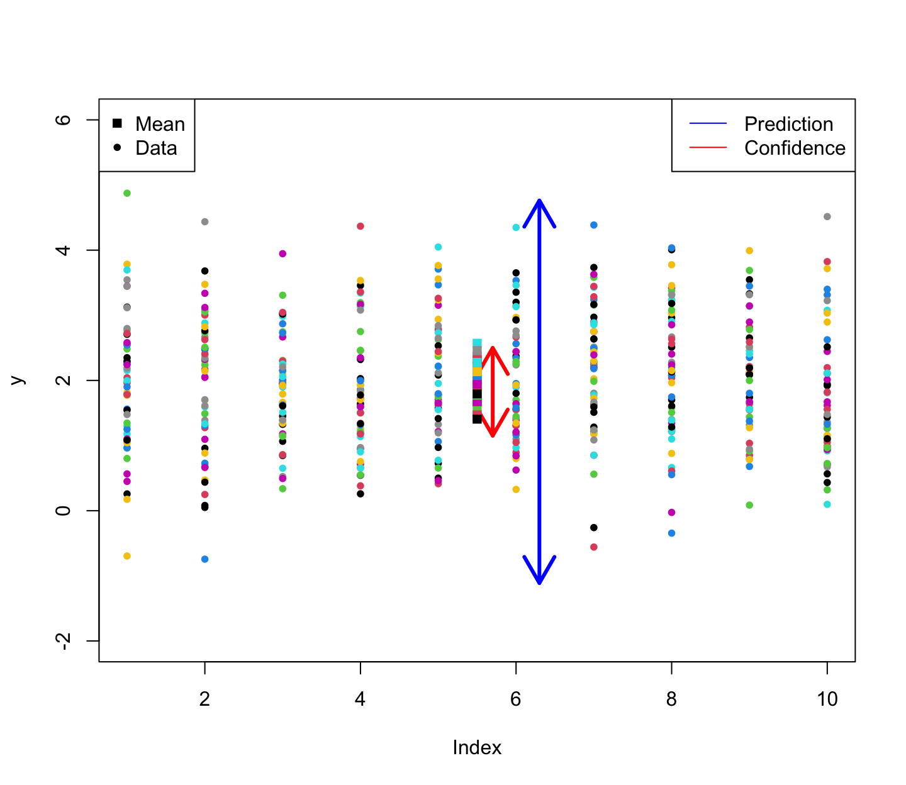
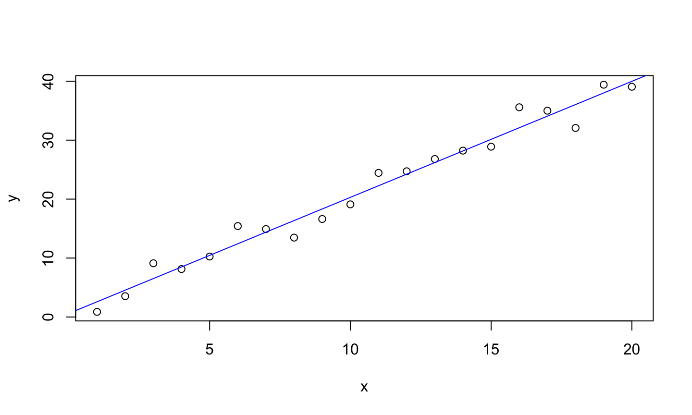
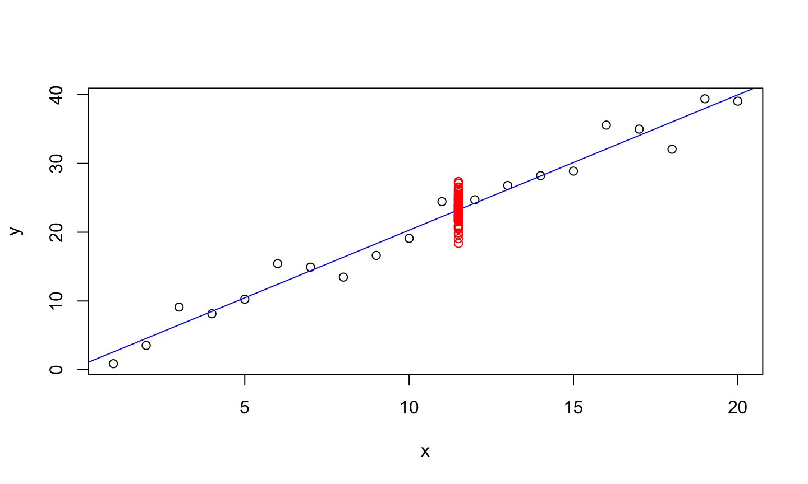
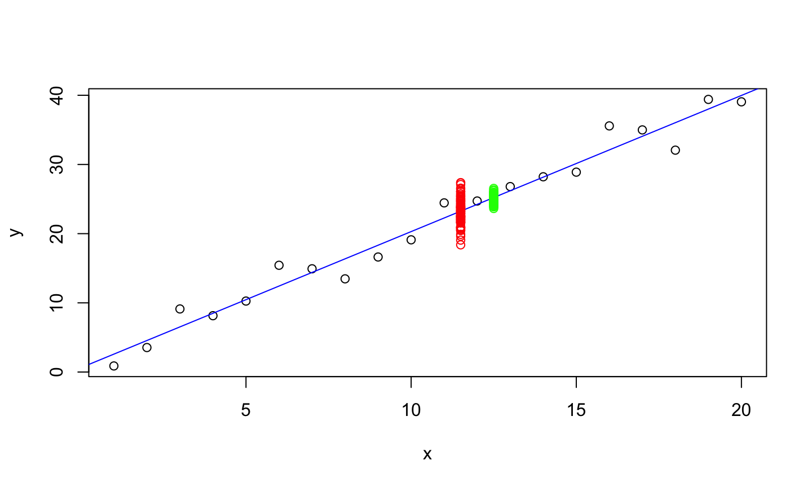
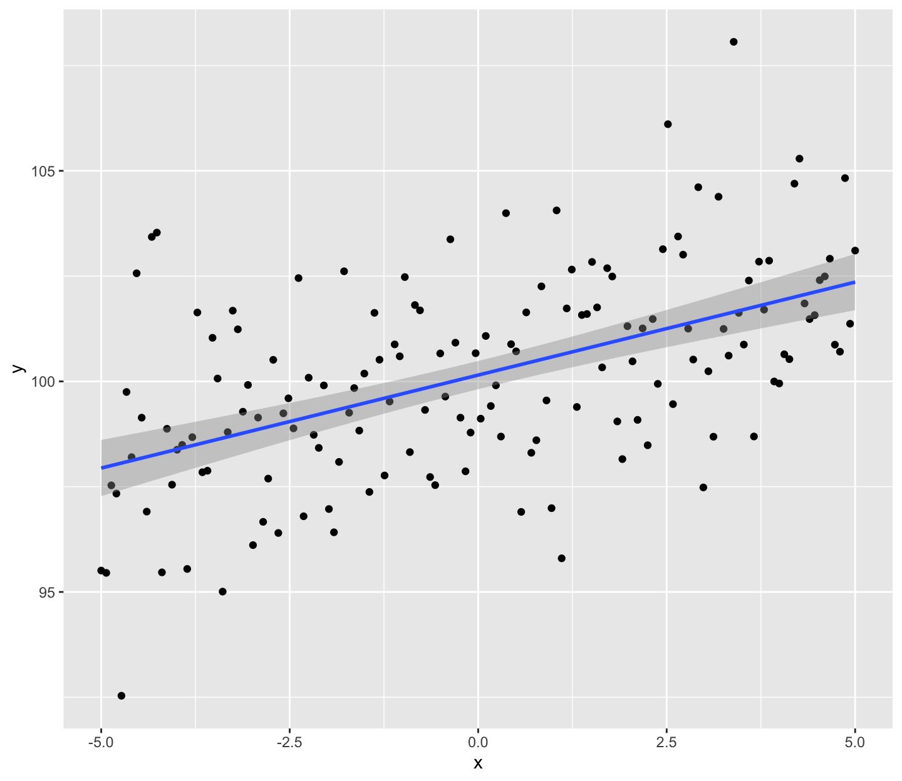
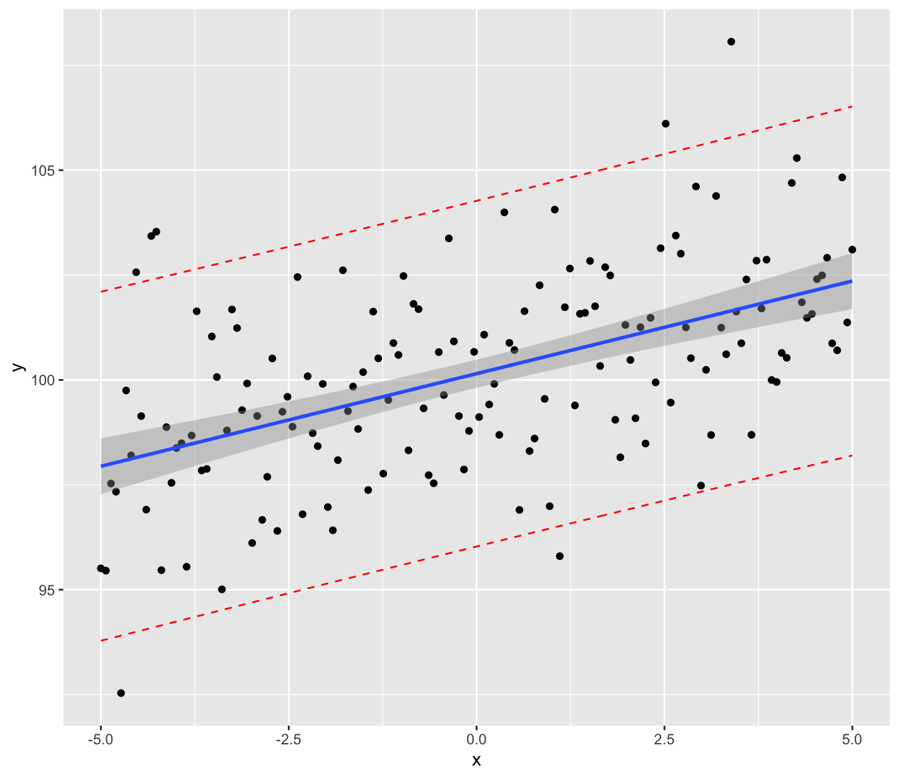

Given a new set of regressor values, \(x_0=(1,x_{01},…,x_{0,p-1} )^T\), a natural predictor for the associated response is \(\hat{y}_0 = x_0^T\hat{\beta}\).
What is the uncertainty in our prediction?
- It depends on the type of prediction made.
6/4/2020
Given a new set of regressor values, \(x_0=(1,x_{01},…,x_{0,p-1} )^T\), a natural predictor for the associated response is \(\hat{y}_0 = x_0^T\hat{\beta}\).
What is the uncertainty in our prediction?
There are two types of predictions that are made from regression models.
Consider building a regression model predicting the selling price of homes in a certain area based on predictors such as the number of bedrooms and closeness to a major highway.
Consider building a regression model predicting the selling price of homes in a certain area based on predictors such as the number of bedrooms and closeness to a major highway.
Given a set of regressor values x_0, we might want to:
Predict the future selling price of a specific house with characteristics \(x_0\).
\[\begin{aligned} var(x_0^T\hat{\beta}) = & var(x_0^T(X^TX)^{-1}X^Ty) \\ = & x_0^T(X^TX)^{-1}X^T var(y) \left(x_0^T(X^TX)^{-1}X^T\right)^T\\ =& x_0^T(X^TX)^{-1}X^T var(y) X(X^TX)^{-1}x_0\\ =& x_0^T(X^TX)^{-1}X^T \sigma^2 I X(X^TX)^{-1}x_0\\ =& x_0^T(X^TX)^{-1}X^T X(X^TX)^{-1}x_0 \sigma^2\\ =& x_0^T(X^TX)^{-1}x_0 \sigma^2\\ \end{aligned}\]
\[\begin{aligned} var(x_0^T\hat{\beta} +\epsilon) = & var(x_0^T(X^TX)^{-1}X^Ty) +\sigma^2 & \text{Assume Independence}\\ =& \left(1+x_0^T(X^TX)^{-1}x_0\right) \sigma^2 \\ \end{aligned}\]
Since, \(\hat{y}_0 = x_0^T\hat{\beta} \sim N(x_0^T\beta, x_0^T(X^TX)^{-1}x_0 \sigma^2\),
\[\frac{\hat{y}_0 - x_0^T\beta}{\hat{\sigma}\sqrt{x_0^T(X^TX)^{-1}x_0}}\sim T_{n-p}.\]
A 100(1-)% CI for the mean response given \(x_0\), \[x_0^T\hat{\beta} \pm t_{n-p}^{\alpha/2} \hat{\sigma}\sqrt{x_0^T(X^TX)^{-1}x_0}.\]
A 100(1-)% CI for a future response given \(x_0\), \[x_0^T\hat{\beta} \pm t_{n-p}^{\alpha/2} \hat{\sigma}\sqrt{1+x_0^T(X^TX)^{-1}x_0}.\]
A future observation is a random variable. Thus, the second type of interval is typically called a prediction interval (PI).
A confidence interval for the mean response is typically much narrower than the prediction interval for a new response (assuming the same x_0).
arrows(x0 = 5.7, y0 = ci(y)[1], x1 = 5.7, y1 = ci(y)[2], lwd = 3, code = 3, col = 'red')

set.seed(123) x = seq(1,20) y = 2*x + rnorm(length(x), mean = 0, sd = 2) lmod = lm(y~x) plot(x,y) abline(lmod, col = 'blue')

set.seed(123) new_obs = 2*11.5 + rnorm(100, mean = 0, sd = 2) plot(x,y) abline(lmod, col = 'blue') points(rep(11.5, length(new_obs)), new_obs, col='red')

set.seed(123)
mean_obs <- c()
for(i in 1:100){
obs = 2*12.5 + rnorm(10, mean = 0, sd = 2)
mean_obs[i]<-mean(obs)
}
plot(x,y)
abline(lmod, col = 'blue')
points(rep(11.5, length(new_obs)), new_obs, col='red')
points(rep(12.5, length(mean_obs)), mean_obs, col = 'green')

Measuring body fat is not simple. Muscle and bone are denser than fat so an estimate of body density can be used to estimate the proportion of fat in the body. Measuring someone’s weight is easy but volume is more difficult. One method requires submerging the body underwater in a tank and measuring the increase in the water level. Most people would prefer not to be submerged underwater to get a measure of body fat, so we would like an easier method. In order to develop such a method, researchers recorded age, weight, height, and 10 body circumference measurements for 252 men. Each man’s percentage of body fat was accurately estimated by an underwater weighing technique. Can we predict body fat using only the easy-to-record measurements?
data(fat, package = 'faraway')
lmod <- lm(brozek ~ age + weight + height + neck + chest +
abdom + hip + thigh + knee + ankle + biceps +
forearm + wrist, data=fat)
summary(lmod)
## ## Call: ## lm(formula = brozek ~ age + weight + height + neck + chest + ## abdom + hip + thigh + knee + ankle + biceps + forearm + wrist, ## data = fat) ## ## Residuals: ## Min 1Q Median 3Q Max ## -10.264 -2.572 -0.097 2.898 9.327 ## ## Coefficients: ## Estimate Std. Error t value Pr(>|t|) ## (Intercept) -15.29255 16.06992 -0.952 0.34225 ## age 0.05679 0.02996 1.895 0.05929 . ## weight -0.08031 0.04958 -1.620 0.10660 ## height -0.06460 0.08893 -0.726 0.46830 ## neck -0.43754 0.21533 -2.032 0.04327 * ## chest -0.02360 0.09184 -0.257 0.79740 ## abdom 0.88543 0.08008 11.057 < 2e-16 *** ## hip -0.19842 0.13516 -1.468 0.14341 ## thigh 0.23190 0.13372 1.734 0.08418 . ## knee -0.01168 0.22414 -0.052 0.95850 ## ankle 0.16354 0.20514 0.797 0.42614 ## biceps 0.15280 0.15851 0.964 0.33605 ## forearm 0.43049 0.18445 2.334 0.02044 * ## wrist -1.47654 0.49552 -2.980 0.00318 ** ## --- ## Signif. codes: 0 '***' 0.001 '**' 0.01 '*' 0.05 '.' 0.1 ' ' 1 ## ## Residual standard error: 3.988 on 238 degrees of freedom ## Multiple R-squared: 0.749, Adjusted R-squared: 0.7353 ## F-statistic: 54.63 on 13 and 238 DF, p-value: < 2.2e-16
x <- model.matrix(lmod) (x0<-apply(x, 2, median))
## (Intercept) age weight height neck chest ## 1.00 43.00 176.50 70.00 38.00 99.65 ## abdom hip thigh knee ankle biceps ## 90.95 99.30 59.00 38.50 22.80 32.05 ## forearm wrist ## 28.70 18.30
(y0<-sum(x0*coef(lmod)))
## [1] 17.49322
predict(lmod, newdata = data.frame(t(x0)))
## 1 ## 17.49322
Note: The data.frame object placed in the new argument must include columns with names matching the names of the predictor variables in the fitted model.
predict(lmod, newdata = data.frame(t(x0)), interval = "prediction", level = 0.95)
## fit lwr upr ## 1 17.49322 9.61783 25.36861
predict(lmod, newdata = data.frame(t(x0)), interval = "confidence", level = 0.95)
## fit lwr upr ## 1 17.49322 16.94426 18.04219
The prediction interval ranges from 9.6% body fat up to 25.4%. This is pretty wide, so there may not be enough information for practical use.
The confidence interval for the mean response is 16.9% to 18.1%, which is much narrower.
The percentage of body fat between 16.94 and 18.04 are good estimates of the unknown mean percent body fat of the people with age –, height –, etc. In general, if we would repeat our sampling procedure infinitely, 95% of such constracted confidence intervals would contain the true mean percentage of body fat.
Given a person’s measurements are (age = 43, height = 70, etc.), the percengate of body fat will be between 9.62 to 25.37 with a confidence of 95%. In general, if we could repeat our sampling process infinitely, 95% of such constructed prediction intervals would contain the person’s true percent body fat.
Extrapolation is making statistical inference outside the range of the observed data.
What happens when we predict body fat at the 95th percentile of the observed data?
(x1 <- apply(x,2,function(x) quantile(x,0.95)))
## (Intercept) age weight height neck chest ## 1.000 67.000 225.650 74.500 41.845 116.340 ## abdom hip thigh knee ankle biceps ## 110.760 112.125 68.545 42.645 25.445 37.200 ## forearm wrist ## 31.745 19.800
predict(lmod, new = data.frame(t(x1)), interval="prediction")
## fit lwr upr ## 1 30.01804 21.92407 38.11202
predict(lmod, new = data.frame(t(x1)), interval="confidence")
## fit lwr upr ## 1 30.01804 28.07072 31.96537
Our confidence interval for the mean is almost 4% wide instead of 1%! That is a large increase in our uncertainty!


An additional source of variation is not accounted for in the previous intervals:
We do our best to find a good model given the available data, but there will always be substantial model uncertainty, i.e., the form the model should take.
Parametric uncertainty is accounted for using the methods we have learned.
Model uncertainty is much harder to quantify.
Bad model. The statistician does a poor job of modeling the data.
Quantitative extrapolation. We try to predict outcomes for cases with predictor values much different from what we see in the data.
Qualitative extrapolation. We try to predict outcomes for observations that come from a different population.
Overconfidence due to overtraining.
Black swans. Sometimes errors can appear to be normally distributed because you haven’t seen enough data to be aware of extremes.